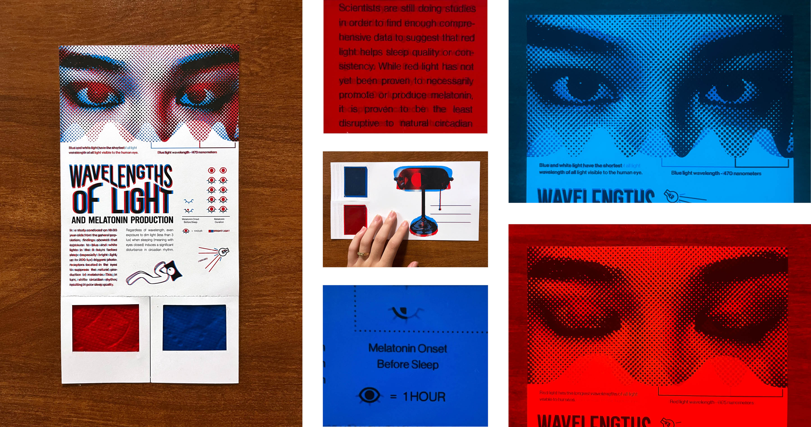
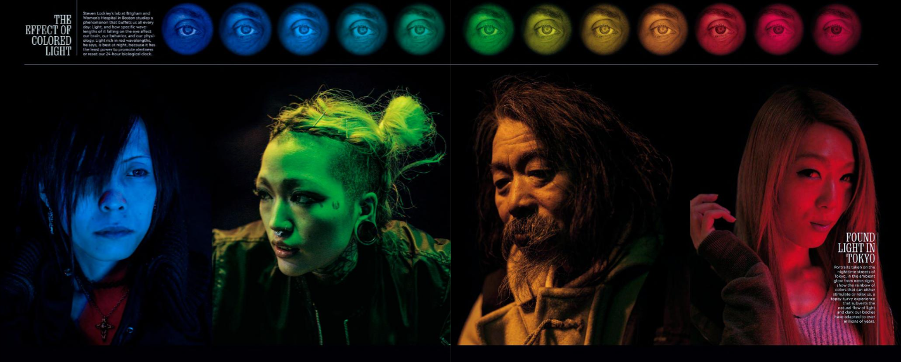
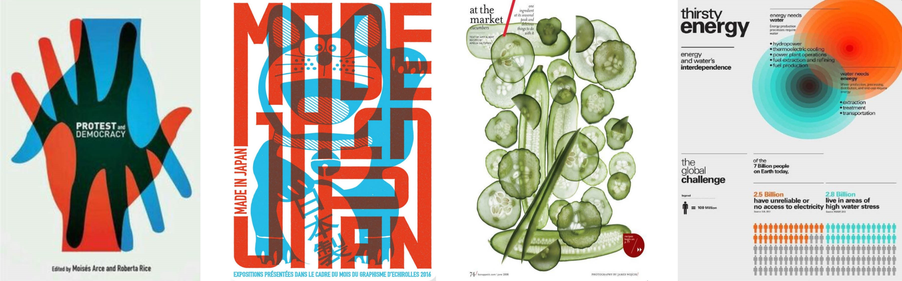
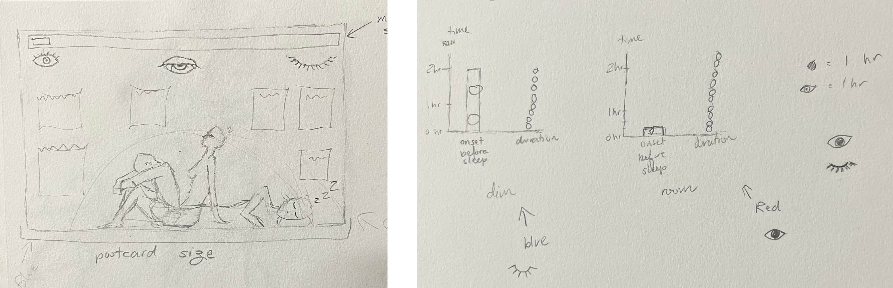
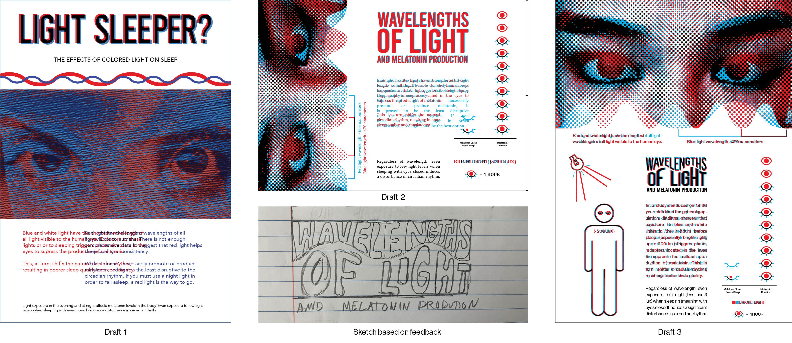
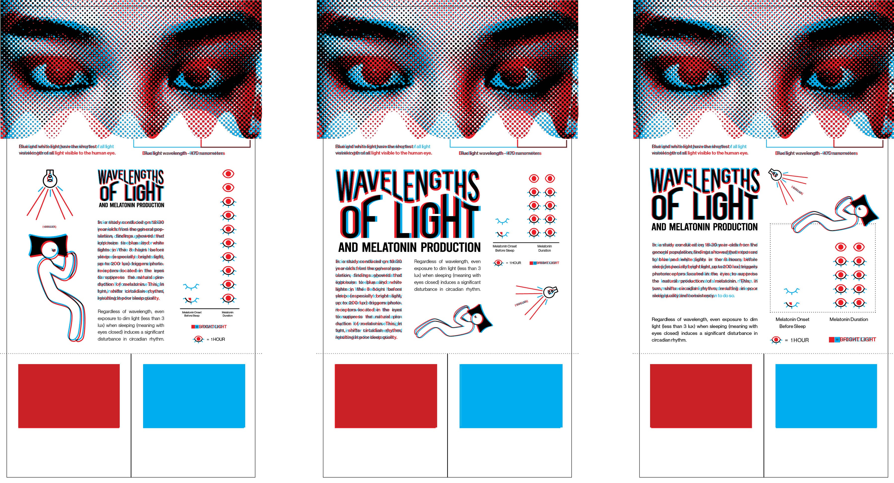
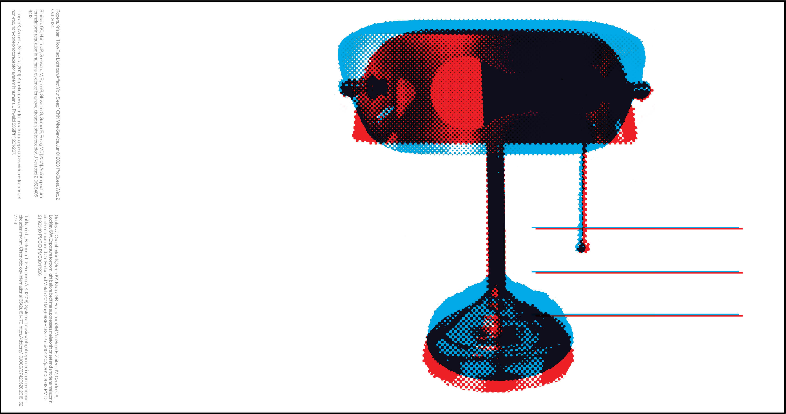
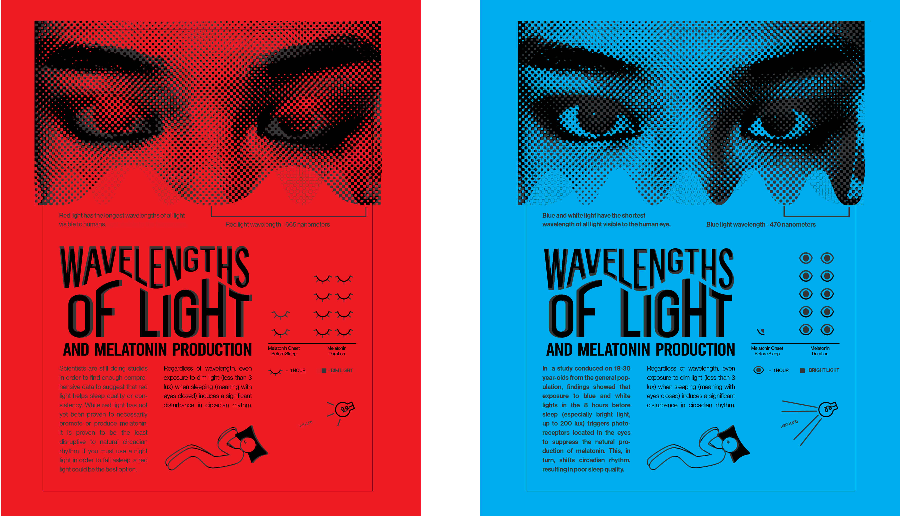
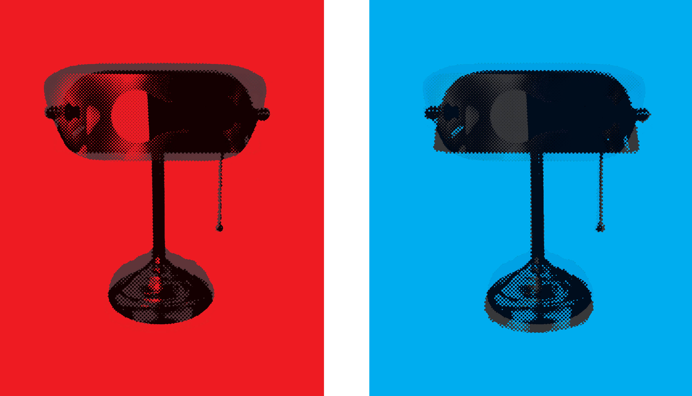

Wavelengths of Light and Melatonin Production is a piece that suggests users to tear off the colored films and take a closer look at the two sets of information and infographics presented. The back of the piece, in postcard format, is designed to maximize sharability. Each iteration represents data based on scientific research and studies on healthy 18 to 30 year-olds from the general population. It informs the viewer on the effects of red and blue light in relation to sleep quality and consistency from this group, while doing so in a fun, interactive way.
“Choose a specific piece of information design to improve. Evaluate the current design
using Gestalt laws, color theory, perception, and grid layout. Identify the need for improvement and
determine what aspects of the design are ineffective. Understand the needs of the target
audience and how well the current design serves them.”
Based on the brief, I chose to redesign the graphic seen below as pulled from the August 2018 issue of
National Geographic on sleep patterns in humans. At a glance, the layout choice and colors are
striking. The photography draws interest from the viewer and evokes a certain nostalgia and sense of
nighttime. Despite being visually interesting, I knew I wanted to make some improvements; there needed to be
a graphical representation of the available data, along with isotypes to supplement the graph. Furthermore,
I wanted to cut the extraneous information that was not backed up by research or statistical findings, as
well as add an aspect of interactivity to the final product.

Initially, I wanted my new design to look a lot like the original, with a dark background and bright, eye-catching colors. However, upon doing the necessary research, I realized that the imagery in that was misleading. Despite the photographs being in red, orange, green, and blue, and the title being “The Effect of Colored Light” (implying that all different colors of light have been shown to affect sleep), there are really only studies showing the effects of two colors of light on sleep patters: red and blue. These findings forced me to switch tracks from my initial ideas and gather new inspiration images. All sources used for the project can be found on the back of the final postcard.


I presented three rounds of drafts to my professor and peers for feedback. The first
feedback session told me to add an isotype and graph, change some phrasing, and separate out some
information from the
body copy. In the second round of feedback, (after incorporating my own photos and a halftone effect) I was
asked to
change the typeface used for the body copy from serif to sans for increased legibility. The isotypes I had
used in the graphs weren't enough; I needed another. Additionally, I needed to make a header that was more
in-tune with the design choices of the rest of the graphic. This advice would get me to the final set of
drafts, in which I had implemented these changes, added an additional set of isotypes, and switched the
formatting from horizontal back to vertical.




